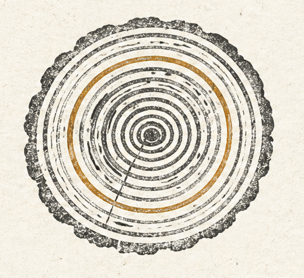

Most marketing software is sold to a reader who is in a hurry. The promise is a spike: more reach, more followers, more output, more — overnight. The math underneath the promise is borrowed from a different kind of business than the one most readers actually run.
If you run a venture-backed startup with eighteen months of runway and an investor on the board asking why the line isn’t hockey-sticking, the math fits. If you run a business you intend to keep for the next twenty or thirty years, it doesn’t. The same software, sold under the same banner, is solving two completely different problems — and the second one is the larger of the two by an order of magnitude.
Bristlecone is for the second one.
The compounding math nobody draws.
Show up in front of the right people every week, for years, and you don’t need a viral moment. The miracle is the staying power. The miracle is the follower who’s still there in year seven, sharing your post in year eight, and walking in the door in year ten because you never disappeared.
That math doesn’t look like a hockey stick. It looks like a line. A steady line, slightly upward, with an honest slope. It is the line a tradesperson draws when they explain how they have shown up, season after season, for thirty years.
Show up well. Show up without fail. Stay top of mind. The compounding is not in any single post — it is in the presence that builds when you never go quiet.
A growth-hacking tool chases the spike. A steady marketing engine builds the presence the spike never leaves behind. Those are not the same problem and they don’t want the same software.
The operator’s judgment is the asset.
You know things about your business that no software can infer from its inputs. You know the post that would land badly this week because of something happening in your town. You know the topic your people never get tired of. You know the offer the spreadsheet calls suboptimal is the one that built your name in the first place.
That knowledge is the asset. Software that asks for it, listens to it, and folds it into the work is sharpening your judgment. Software that overrides it is dulling it — and over enough seasons, dulling it expensively.
This is why every consequential decision Bristlecone makes is a commit, a revise, or a return to your jurisdiction. The system proposes; you decide. It is not a polite gesture. It is the entire architecture.
Honest resolution, or no resolution.
If the system can’t actually do something — if a channel isn’t connected, if a capability gap is real, if the confidence is too low to act — it tells you. It does not quietly post something weaker, fake an engagement number, or pretend a recycled post is a campaign. The capability gap is structural information. We surface it. We don’t paper over it.
This single discipline is more meaningful than most of what passes for product copy elsewhere. A tool that admits the limit of its capability is a tool you can build a decade-long relationship with. A tool that papers over its limits is a tool you will eventually catch lying.

The bristlecone, literally.
The pine we’re named for is not a metaphor we invented for a launch deck. Pinus longaeva grows on the dolomite ridgelines of the Great Basin, between 9,800 and 11,500 feet — in thin air, drought, and cold that kill almost everything around it. Its wood is so dense and resinous that it resists the rot, fire, and insects that fell its neighbors. The oldest verified specimen, the tree dendrochronologists named Methuselah, was already alive when the first cuneiform was pressed in Sumer. It is still standing — because it never stopped.
What we borrow from it is not the silhouette, and not the slowness. It’s the discipline: it never skips a season. A tight ring every year, for five thousand years — that is what it means to last. Its scars are visible. It looks weathered because it is. It is also winning, by the only measure that matters in the long run, by a margin so wide it is silly.
Who we built this for.
We built this for the long game — for the operator who measures success in years, not next quarter, and wants their marketing working the whole time. If that’s the business you’re running, you’re in the right place.
What we’re building is for the operator who has been around long enough to recognize that anything claiming “10x” is selling them something, who has watched marketing-tool fashion cycle three times in five years, who has a business they intend to still be running when their kids are out of school. That operator is not stupid. They are tired. They want methodical, evidence-based, calm.
That’s the reader we wrote this for.
- Most businesses don’t need a spike. They need to show up well, season after season.
- The operator’s judgment is the asset. Software should sharpen it, not replace it.
- A pipeline you can read end-to-end is more trustworthy than a model you can’t.
- If the system can’t actually do something, it should say so — not fall back to something worse.
- Compounding isn’t flashy. It’s relentless. That is why it works.
- Showing up without fail is a competitive advantage in an impatient market.
— Bristlecone, 2026.